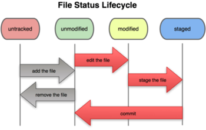

Recall that the purpose of Git's index is to serve as a place to put changes that are ready to be committed. This page explores how to manipulate the index and turn it into a commit once you're happy with its contents.

Overview of working with the index
(Image credit: Pro Git by Scott Chacon)
When using Git, if you are ever unsure of the state of
your working directory relative to the master branch,
the status command can be extremely informative.
For example, at this point in the project, nothing has been done.
Let's do a small experiment to demonstrate the usefulness of the status command!
file1.txt), run:
$ touch file1.txt
$ lsYou should find
file1.txt in the list of files.
$ git status
# On branch master # # Initial commit # # Untracked files: # (use "git add <file>..." to include in what will be committed) # # file1.txt nothing added to commit but untracked files present (use "git add" to track)
Untracked files header:
it indicates that file1.txt's history is not being tracked in our repository.
In order for such files to be included in our next commit,
we will have to learn how to stage/track files.
Before we can make any commits,
we need to tell Git which files we want to include.
To do this, for each file that we want to be version-controlled,
we must add it to the holding area for ready-to-commit files
(aka the "index" or staging area).
file1.txt,
so let's add it to the commit!
You can do this with the following command:
$ git add file1.txt
status tool again:
$ git status
# On branch master # # Initial commit # # Changes to be committed: # (use "git rm --cached <file>..." to unstage) # # new file: file1.txt #
file1.txt,
but I already added it to the commit!
We can fix this issue after we make the desired changes to the file,
simply by "updating" the version of the file that has already been added to the commit.
When working with version-controlled files, it is common to suddenly remember something you wanted to do to a file before committing it, but you already added it to the commit! Worry not; this is a very easy fix.
We want to make a slight change to file1.txt
and then make a commit with the most up-to-date version.
file1.txt in your favorite text editor,
and add some text of your choice.
Save the file and return to the terminal window.
status command can give us a hint:
$ git status
file1.txt that have not been committed:
the version in the stage (unchanged) and the one in our current working directory (changed).
# On branch master # # Initial commit # # Changes to be committed: # (use "git rm --cached <file>..." to unstage) # # new file: file1.txt # # Changes not staged for commit: # (use "git add <file>..." to update what will be committed) # (use "git checkout -- <file>..." to discard changes in working directory) # # modified: file1.txt #
$ git add file1.txt
file1.txt after it was last added to the stage:
$ git checkout -- file1.txt
$ git status
# On branch master # # Initial commit # # Changes to be committed: # (use "git rm --cached <file>..." to unstage) # # new file: file1.txt #
$ git commit
init commit",
save the file, and exit.
[master (root-commit) 949b9f1] init commit 1 file changed, 1 insertion(+) create mode 100644 file1.txt
status again,
now that the commit is complete:
$ git status
# On branch master nothing to commit (working directory clean)
Now that we have successfully made a commit, what happens if we need to rename a tracked file?
file1.txt file
to the more descriptive name readme.txt:
$ git mv file1.txt readme.txt
status again:
$ git status
# On branch master # Changes to be committed: # (use "git reset HEAD <file>..." to unstage) # # renamed: file1.txt -> readme.txt #
If you simply relocate a file within your repository,
you can use the mv command to update Git in the same way.
readme.txt into
a new directory called documentation:
$ mkdir documentation $ git mv readme.txt documentation/readme.txt
status again:
$ git status
# On branch master # Changes to be committed: # (use "git reset HEAD <file>..." to unstage) # # renamed: file1.txt -> documentation/readme.txt #
file1.txt.
It turns out that we do not need our readme.txt file after all.
We want to delete our working copy, and also tell Git that we deleted it. To accomplish this, we will use the rm command.
readme.txt file:
$ rm documentation/readme.txt
status to see what happens:
$ git status
# On branch master # Changes to be committed: # (use "git reset HEAD <file>..." to unstage) # # renamed: file1.txt -> documentation/readme.txt # # Changes not staged for commit: # (use "git add/rm <file>..." to update what will be committed) # (use "git checkout -- <file>..." to discard changes in working directory) # # deleted: documentation/readme.txt #
$ git rm documentation/readme.txt
rm 'documentation/readme.txt'
status again:
$ git status
# On branch master # Changes to be committed: # (use "git reset HEAD <file>..." to unstage) # # deleted: file1.txt #
file1.txt no longer matters.)If at any point in the progression of your project, you want to take a look at a history of all of your commits so far, Git has the perfect tool for you!
$ git log --oneline
949b9f1 init commit
log_file.txt, use the following command:
$ git log > log_file.txt
Sometimes it's helpful to experiment
with an older version of your codebase,
either for nostalgia or because
you're trying to determine when you introduced a bug.
This is where the checkout tool comes in handy.
status
to ensure you do not have any uncommitted changes:
$ git statusIf you do, commit them before continuing.
log
(see the previous section for more details)
and find the hash of the commit you want to work with.
<hash>:
$ git checkout <hash>
$ git checkout master
If you ever reach a point where you would like to see the differences
between two different states of your repository,
the diff tool can be quite useful.
HEAD, run the following:
$ git diff /path/to/filename
$ git diff --cached <commit> /path/to/filenameNote: In this situation, the <commit> argument is optional. If you do not include it, the command will use the currently–checked out commit as the basis for comparison, by default.
$ git diff <commit> /path/to/filename
$ git diff <commit1> <commit2> /path/to/filename